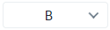
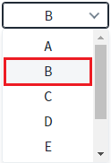
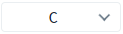
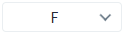
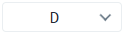
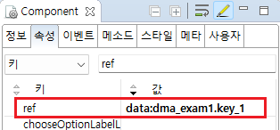

Selectbox의 'ref' 속성과 'setRef' 메소드를 사용하여 컴포넌트의 값과 데이터 객체(DataMap, DataList)를 연결하는 예제입니다.
'ref' 속성은 컴포넌트의 값(value)과 데이터 객체의 키 또는 컬럼의 값(value)을 연결하는 기능을 제공합니다. 데이터 객체와 연결되면 값이 동기화됩니다.
'setRef' 메소드는 'ref' 속성의 값을 변경하는 기능을 제공합니다.
'ref'의 설정 값이 리스트형(다건) 데이터 객체의 컬럼일 경우, 데이터 객체의 선택된 행의 컬럼 값과 연결됩니다. 대표적으로 'DataList', 'AliasDataList'가 리스트형 데이터 객체에 해당합니다. 리스트 형식의 데이터 객체에서 행을 선택하는 기능은 데이터 객체의 'initRowPosition' 속성과 'setRowPosition' 메소드를 통해 제공됩니다.
DataMap의 'key'와 연결
DataList의 'column'과 연결
'ref' 속성과 데이터 객체가 연결되었을 때, 컴포넌트와 데이터 객체이 동기화되는 것을 확인하고 스크립트로 'ref' 속성이 변경되는 것을 확인합니다. 영역에 구성된 버튼을 순서에 맞게 클릭하여 Selectbox의 선택 값 표시 영역에 출력된 값과 DataMap의 데이터를 확인합니다. DataMap의 데이터는 '로그 확인'의 Textarea와 브라우저 개발자 도구의 콘솔에 출력됩니다.
1
STEP 1: 초기 상태를 확인합니다.
예제 영역 "DataMap의 'key'와 연결"에 구성된 버튼과 Selectbox를 확인합니다.
'ref' 속성을 통해 Selectbox의 값과 DataMap 'dma_exam1'의 'key_1' 키가 연결된 상태로 선택 값 표시 영역에 'B'가 출력됩니다.
영역의 하단에 구성된 Textarea에는 DataMap의 데이터가 출력되어 있습니다.Image 1.브라우저(Chrome) 실행 예시

Example 1.Log
[08:27:47] # DataMap "dma_exam1"의 JSON 형식의 데이터
{
"key_1": "B",
"key_2": "D"
}Selectbox 목록의 label과 value는 동일한 값으로 설정되었습니다.
Image 2.브라우저(Chrome) 실행 예시 - Selectbox의 목록

2
STEP 2: 연결된 DataMap의 값 변경하기
"1-1 DataMap 'dma_exam1'의 'key_1' 키의 값을 'C'로 변경하기" 버튼을 클릭합니다.3
STEP 3: 실행된 결과를 확인합니다.
DataMap 'dma_exam1'의 'key_1' 키의 값과 Selectbox의 선택 값 표시 영역의 문자열이 'C'로 변경됩니다.
Image 3.브라우저(Chrome) 실행 예시

Example 2.Log
[08:31:06] 스크립트 실행 : dma_exam1.set("key_1", "C");
[08:31:06] # DataMap "dma_exam1"의 JSON 형식의 데이터
{
"key_1": "C",
"key_2": "D"
}4
STEP 4: Selectbox의 값 변경하기
"1-2 Selectbox의 값을 'F'로 변경하기" 버튼을 클릭합니다.5
STEP 5: 실행된 결과를 확인합니다.
Selectbox의 선택 값 표시 영역의 문자열과 DataMap 'dma_exam1'의 'key_1' 키의 값이 'F'로 변경됩니다.
Image 4.브라우저(Chrome) 실행 예시

Example 3.Log
[08:31:58] 스크립트 실행 : sbx_exam1.setValue("F");
[08:31:58] # DataMap "dma_exam1"의 JSON 형식의 데이터
{
"key_1": "F",
"key_2": "D"
}6
STEP 6: 스크립트로 Selectbox의 'ref' 속성 변경하기
"1-3 'ref' 속성을 DataMap 'dma_exam1'의 'key_2' 키로 변경하기" 버튼을 클릭합니다.7
STEP 7: 실행된 결과를 확인합니다.
Selectbox의 값과 DataMap 'dma_exam1'의 'key_2' 키가 연결됩니다. Selectbox의 선택 값 표시 영역의 문자열이 'D'로 변경됩니다.
Image 5.브라우저(Chrome) 실행 예시

Example 4.Log
[08:32:51] 스크립트 실행 : sbx_exam1.setRef("data:dma_exam1.key_2");
[08:32:51] # DataMap "dma_exam1"의 JSON 형식의 데이터
{
"key_1": "F",
"key_2": "D"
}'ref' 속성과 데이터 객체가 연결되었을 때, 컴포넌트와 데이터 객체이 동기화되는 것을 확인하고 스크립트로 'ref' 속성이 변경되는 것을 확인합니다. 영역에 구성된 버튼을 순서에 맞게 클릭하여 Selectbox의 선택 값 표시 영역에 출력된 값과 DataList의 데이터를 확인합니다. DataList의 데이터는 '로그 확인'의 Textarea와 브라우저 개발자 도구의 콘솔에 출력됩니다. Selectbox 목록의 label과 value는 동일한 값으로 설정되었습니다.
1
STEP 1: 초기 상태를 확인합니다.
예제 영역 "DataList의 'column'과 연결"에 구성된 버튼과 Selectbox를 확인합니다.
DataList 'dlt_exam1'의 'initRowPosition' 속성이 '0'으로 설정되어 첫 번째 로우가 선택된 상태입니다.
'ref' 속성을 통해 Selectbox의 값과 DataList 'dlt_exam1'의 첫 번째 로우의 'col_1' 컬럼이 연결되어, 선택 값 표시 영역에 'B'가 출력됩니다.
영역의 하단에 구성된 Textarea에는 DataList의 데이터가 출력되어 있습니다.Image 6.브라우저(Chrome) 실행 예시
Example 5.Log
[08:27:47] # DataList "dlt_exam1"의 JSON 형식의 데이터
[
{
"col_1": "B",
"col_2": "D",
"rowStatus": "R"
},
{
"col_1": "A",
"col_2": "E",
"rowStatus": "R"
}
]Selectbox 목록의 label과 value는 동일한 값으로 설정되었습니다.
Image 7.브라우저(Chrome) 실행 예시 - Selectbox의 목록
2
STEP 2: 연결된 DataList의 값 변경하기
"2-1 DataList 'dlt_exam1'의 첫 번째 로우의 'col_1' 컬럼의 값을 'C'로 변경하기" 버튼을 클릭합니다.3
STEP 3: 실행된 결과를 확인합니다.
DataList 'dlt_exam1'의 첫 번째 로우의 'col_1' 컬럼의 값과 Selectbox의 선택 값 표시 영역의 문자열이 'C'로 변경됩니다.
Image 8.브라우저(Chrome) 실행 예시
Example 6.Log
[08:34:53] 스크립트 실행 : dlt_exam1.setCellData(0, "col_1", "C");
[08:34:53] # DataList "dlt_exam1"의 JSON 형식의 데이터
[
{
"col_1": "C",
"col_2": "D",
"rowStatus": "U"
},
{
"col_1": "A",
"col_2": "E",
"rowStatus": "R"
}
]4
STEP 4: Selectbox의 값 변경하기
"2-2 Selectbox의 값을 'F'로 변경하기" 버튼을 클릭합니다.5
STEP 5: 실행된 결과를 확인합니다.
Selectbox의 선택 값 표시 영역의 문자열과 첫 번째 로우의 'col_1' 컬럼의 값이 'F'로 변경됩니다.
Image 9.브라우저(Chrome) 실행 예시
Example 7.Log
[08:36:52] 스크립트 실행 : sbx_exam2.setValue("F");
[08:36:52] # DataList "dlt_exam1"의 JSON 형식의 데이터
[
{
"col_1": "F",
"col_2": "D",
"rowStatus": "U"
},
{
"col_1": "A",
"col_2": "E",
"rowStatus": "R"
}
]6
STEP 6: 스크립트로 Selectbox의 'ref' 속성 변경하기
"2-3 'ref' 속성을 DataList 'dlt_exam1'의 첫 번째 로우의 'col_2' 컬럼으로 변경하기" 버튼을 클릭합니다.7
STEP 7: 실행된 결과를 확인합니다.
Selectbox의 값과 DataList 'dlt_exam1'의 첫 번째 로우의 'col_2' 컬럼이 연결됩니다. Selectbox의 선택 값 표시 영역의 문자열이 'D'로 변경됩니다.
Image 10.브라우저(Chrome) 실행 예시
Example 8.Log
[08:37:14] 스크립트 실행 : sbx_exam2.setRef("data:dlt_exam1.col_2");
[08:37:14] # DataList "dlt_exam1"의 JSON 형식의 데이터
[
{
"col_1": "F",
"col_2": "D",
"rowStatus": "U"
},
{
"col_1": "A",
"col_2": "E",
"rowStatus": "R"
}
]1
Selectbox의 속성을 정의합니다.
[필수] ref="data:[데이터 객체 id].[key 또는 column의 id]"
(주의 사항)
설정 값의 'data:'은 고정 값입니다.
(예시)
예시 1) DataMap 'dma_exam1'의 'key_1' 키와 연결
ref="data:dma_exam1.key_1"
예시 2) DataList 'dlt_exam1'의 키 'col_1'과 연결
ref="data:dlt_exam1.col_1"
Image 11.웹스퀘어 스튜디오의 Component View - 속성 설정 예시

Example 9.Source
<!-- Selectbox 의 소스 본문 예시 --> <xf:select1 ref="data:dma_exam1.key_1"> <!-- 중략 --> </xf:select1>
1
스크립트를 작성합니다.
Selectbox의 'setRef' 메소드를 사용하여 스크립트를 작성합니다. 세부 설정은 아래의 스크립트 예시에 작성되어 있습니다.
Example 10.Script
//예제 파일에서는 스크립트 'scwin.btn_exam1_3_onclick'에 작성되어 있습니다. // Selectbox 'sbx_exam1'의 'ref' 속성의 설정 값을 DataMap 'dma_exam1'의 'key_2' 키로 변경합니다. // 설정 값의 'data:'는 고정 값입니다. sbx_exam1.setRef("data:dma_exam1.key_2");
ref
setRef